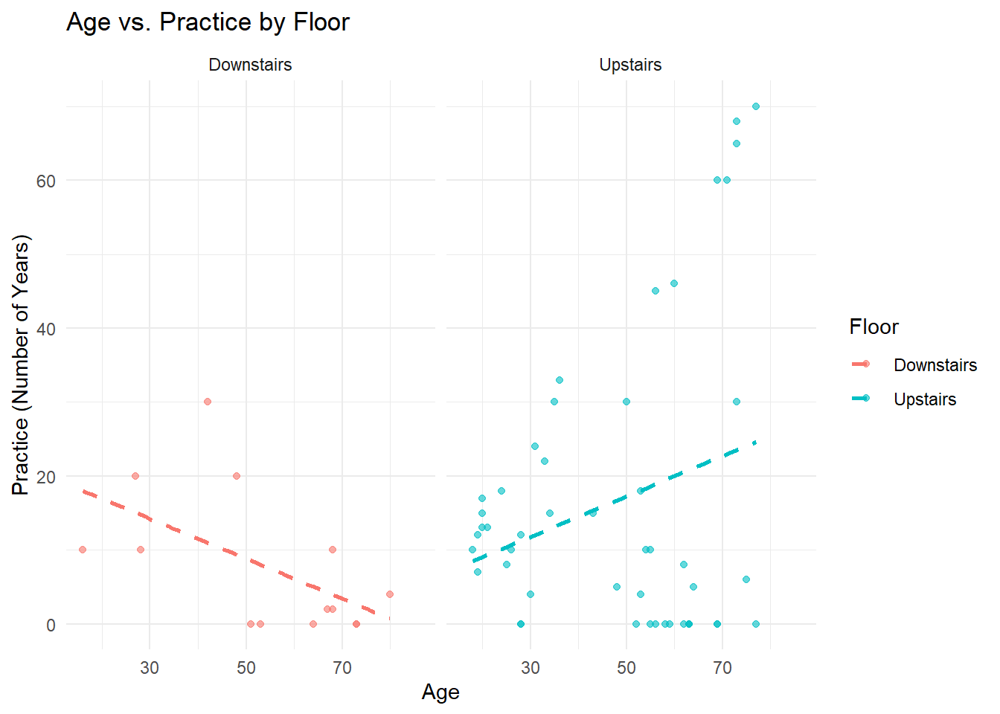

Warning: package 'tidyverse' was built under R version 4.4.1
Warning: package 'ggplot2' was built under R version 4.4.3
Warning: package 'tibble' was built under R version 4.4.1
Warning: package 'tidyr' was built under R version 4.4.1
Warning: package 'readr' was built under R version 4.4.1
Warning: package 'purrr' was built under R version 4.4.1
Warning: package 'dplyr' was built under R version 4.4.3
Warning: package 'stringr' was built under R version 4.4.1
Warning: package 'forcats' was built under R version 4.4.1
Warning: package 'lubridate' was built under R version 4.4.1
── Attaching core tidyverse packages ──────────────────────── tidyverse 2.0.0 ──
✔ dplyr 1.1.4 ✔ readr 2.1.5
✔ forcats 1.0.0 ✔ stringr 1.5.1
✔ ggplot2 3.5.2 ✔ tibble 3.2.1
✔ lubridate 1.9.3 ✔ tidyr 1.3.1
✔ purrr 1.0.2
── Conflicts ────────────────────────────────────────── tidyverse_conflicts() ──
✖ dplyr::filter() masks stats::filter()
✖ dplyr::lag() masks stats::lag()
ℹ Use the conflicted package (<http://conflicted.r-lib.org/>) to force all conflicts to become errors
library(MASS)
Attaching package: 'MASS'
The following object is masked from 'package:dplyr':
select
library(dplyr)library(corrplot)
Warning: package 'corrplot' was built under R version 4.4.3
corrplot 0.95 loaded
library(car)
Warning: package 'car' was built under R version 4.4.1
Loading required package: carData
Warning: package 'carData' was built under R version 4.4.1
Attaching package: 'car'
The following object is masked from 'package:dplyr':
recode
The following object is masked from 'package:purrr':
some
In this section, we’ll experiment with the step() function in R to help select ordinal regression models for our data.
step() is not compatible with clm(), which is why we’ll use polr().
The step() function starts with a full model containing all the possible main effects (as specified by me; in this case all the possible demographic variables). It tests different combinations of variables and then keeps the model with the lowest AIC.
This is useful when we’re dealing with lots of different outcome variables and lots of demographic inputs and we need to figure out which ones to use.
Here’s how we’d run the step() function starting with all the demographic variables and using just fictional story as our outcome.
First some data loading, and demographic variable tidying.
Rows: 103 Columns: 27
── Column specification ────────────────────────────────────────────────────────
Delimiter: ","
chr (26): Fictional_story, Abstract_shapes, Sensory_sensations, Life_experie...
dbl (1): Participant_number
ℹ Use `spec()` to retrieve the full column specification for this data.
ℹ Specify the column types or set `show_col_types = FALSE` to quiet this message.
Rows: 92 Columns: 27
── Column specification ────────────────────────────────────────────────────────
Delimiter: ","
chr (27): Fictional_story, Abstract_shapes, Sensory_sensations, Life_experie...
ℹ Use `spec()` to retrieve the full column specification for this data.
ℹ Specify the column types or set `show_col_types = FALSE` to quiet this message.
outcome_vars <-c("Fictional_story", "Abstract_shapes", "Sensory_sensations", "Life_experiences", "Media", "Music", "Future_plans", "Building", "Everyday")# Converting outcome variables to factors with consistent levels for each thought typedata1[outcome_vars] <-lapply(data1[outcome_vars], factor, levels =c("Not at all", "A small amount of the time", "A moderate amount of the time", "Most of the time", "All of the time"))data2[outcome_vars] <-lapply(data2[outcome_vars], factor, levels =c("Not at all", "A small amount of the time", "A moderate amount of the time", "Most of the time", "All of the time"))#Remaking the floor variabledata1 <- data1 %>%mutate(Floor =ifelse(Location %in%c("A", "B", "C", "D", "E", "F"), "Downstairs", "Upstairs")) %>%relocate(Floor, .after = Location)data2 <- data2 %>%mutate(Floor =ifelse(Location %in%c("A", "B", "C", "D", "E", "F"), "Downstairs", "Upstairs")) %>%relocate(Floor, .after = Location)#Making sure demographic variables are classed in the right way.data1$Age <-as.numeric(data1$Age)
Start by specifying the model with the maximum number of demographic inputs.
library(tidyr)vars_to_check <-c("Fictional_story", "Age", "Gender", "Music_listening", "Practice", "Floor")data_clean1 <- data1[complete.cases(data1[vars_to_check]), ]full_model_fiction <-polr(Fictional_story ~ Age + Gender + Music_listening + Practice + Floor, data = data_clean1, Hess =TRUE)
stepwise_model <-step(full_model_fiction)
Start: AIC=196.44
Fictional_story ~ Age + Gender + Music_listening + Practice +
Floor
Df AIC
- Music_listening 4 189.20
- Gender 2 194.00
- Age 1 194.47
- Floor 1 194.61
<none> 196.44
- Practice 1 200.04
Step: AIC=189.2
Fictional_story ~ Age + Gender + Practice + Floor
Df AIC
- Age 1 187.24
- Floor 1 187.26
- Gender 2 187.42
<none> 189.20
- Practice 1 192.79
Step: AIC=187.24
Fictional_story ~ Gender + Practice + Floor
Df AIC
- Floor 1 185.32
- Gender 2 185.67
<none> 187.24
- Practice 1 191.05
Step: AIC=185.32
Fictional_story ~ Gender + Practice
Df AIC
- Gender 2 183.69
<none> 185.32
- Practice 1 189.13
Step: AIC=183.69
Fictional_story ~ Practice
Df AIC
<none> 183.69
- Practice 1 187.52
summary(stepwise_model)
Call:
polr(formula = Fictional_story ~ Practice, data = data_clean1,
Hess = TRUE)
Coefficients:
Value Std. Error t value
Practice -0.03329 0.01457 -2.284
Intercepts:
Value Std. Error
Not at all|A small amount of the time -1.2585 0.3594
A small amount of the time|A moderate amount of the time 0.1165 0.3167
A moderate amount of the time|Most of the time 1.2920 0.3765
Most of the time|All of the time 2.6386 0.6086
t value
Not at all|A small amount of the time -3.5013
A small amount of the time|A moderate amount of the time 0.3678
A moderate amount of the time|Most of the time 3.4313
Most of the time|All of the time 4.3356
Residual Deviance: 173.6913
AIC: 183.6913
We’ll repeat this looping through all the different thought types.
# List to store resultsmodels <-list()stepwise_models <-list()# Loop through selected outcomesfor (outcome in outcome_vars) { formula <-as.formula(paste(outcome, "~ Age + Gender + Music_listening + Practice + Floor"))# Drop rows with NA values in the outcome or predictors vars_to_check <-c(outcome, "Age", "Gender", "Music_listening", "Practice", "Floor") data1_subset <- data1[complete.cases(data1[vars_to_check]), ]# Debugging messagecat("\nProcessing:", outcome, " | Rows before:", nrow(data1), " | Rows after NA removal:", nrow(data1_subset), "\n")tryCatch({# Fit proportional odds model model <-polr(formula, data = data1_subset, Hess =TRUE, method ="probit", control =list(maxit =1000), na.action = na.exclude)# Store model models[[outcome]] <- model# Print summarycat("\nSummary for", outcome, ":\n")print(summary(model))# Perform stepwise regression step_model <-step(model, direction ="backward", trace =FALSE) stepwise_models[[outcome]] <- step_model# Print stepwise summarycat("\nStepwise Model Summary for", outcome, ":\n")print(summary(step_model)) }, error =function(e) {cat("\nSkipping", outcome, "due to error:", conditionMessage(e), "\n") })}
Processing: Fictional_story | Rows before: 103 | Rows after NA removal: 62
Summary for Fictional_story :
Call:
polr(formula = formula, data = data1_subset, control = list(maxit = 1000),
na.action = na.exclude, Hess = TRUE, method = "probit")
Coefficients:
Value Std. Error t value
Age -0.001156 0.008369 -0.138110
GenderFemale -0.144510 0.295017 -0.489838
GenderOther 1.124412 1.295218 0.868126
Music_listeningSomewhat rarely 0.216922 1.284684 0.168852
Music_listeningModerately frequently -0.143209 1.168389 -0.122569
Music_listeningFrequently 0.131554 1.130832 0.116334
Music_listeningVery frequently 0.003198 1.158241 0.002761
Practice -0.021141 0.009444 -2.238566
FloorUpstairs 0.078595 0.404115 0.194486
Intercepts:
Value Std. Error
Not at all|A small amount of the time -0.8203 1.1149
A small amount of the time|A moderate amount of the time 0.0438 1.1120
A moderate amount of the time|Most of the time 0.7611 1.1243
Most of the time|All of the time 1.4618 1.1456
t value
Not at all|A small amount of the time -0.7358
A small amount of the time|A moderate amount of the time 0.0394
A moderate amount of the time|Most of the time 0.6769
Most of the time|All of the time 1.2760
Residual Deviance: 171.0921
AIC: 197.0921
Stepwise Model Summary for Fictional_story :
Call:
polr(formula = Fictional_story ~ Practice, data = data1_subset,
control = list(maxit = 1000), na.action = na.exclude, Hess = TRUE,
method = "probit")
Coefficients:
Value Std. Error t value
Practice -0.02019 0.008675 -2.327
Intercepts:
Value Std. Error
Not at all|A small amount of the time -0.7637 0.2120
A small amount of the time|A moderate amount of the time 0.0806 0.1954
A moderate amount of the time|Most of the time 0.7756 0.2140
Most of the time|All of the time 1.4559 0.2866
t value
Not at all|A small amount of the time -3.6025
A small amount of the time|A moderate amount of the time 0.4123
A moderate amount of the time|Most of the time 3.6245
Most of the time|All of the time 5.0801
Residual Deviance: 173.8591
AIC: 183.8591
Processing: Abstract_shapes | Rows before: 103 | Rows after NA removal: 62
Summary for Abstract_shapes :
Call:
polr(formula = formula, data = data1_subset, control = list(maxit = 1000),
na.action = na.exclude, Hess = TRUE, method = "probit")
Coefficients:
Value Std. Error t value
Age 0.001293 0.009015 0.1435
GenderFemale 0.094923 0.319923 0.2967
GenderOther 0.620000 1.361648 0.4553
Music_listeningSomewhat rarely -1.495159 1.358356 -1.1007
Music_listeningModerately frequently -2.152360 1.228772 -1.7516
Music_listeningFrequently -1.010729 1.163135 -0.8690
Music_listeningVery frequently -0.704038 1.191806 -0.5907
Practice -0.016892 0.010296 -1.6406
FloorUpstairs -0.481572 0.435557 -1.1056
Intercepts:
Value Std. Error
Not at all|A small amount of the time -1.4962 1.1526
A small amount of the time|A moderate amount of the time -0.5506 1.1395
A moderate amount of the time|Most of the time 0.4749 1.1378
Most of the time|All of the time 0.7601 1.1645
t value
Not at all|A small amount of the time -1.2982
A small amount of the time|A moderate amount of the time -0.4832
A moderate amount of the time|Most of the time 0.4174
Most of the time|All of the time 0.6527
Residual Deviance: 121.6429
AIC: 147.6429
Stepwise Model Summary for Abstract_shapes :
Call:
polr(formula = Abstract_shapes ~ Music_listening + Practice,
data = data1_subset, control = list(maxit = 1000), na.action = na.exclude,
Hess = TRUE, method = "probit")
Coefficients:
Value Std. Error t value
Music_listeningSomewhat rarely -1.73317 1.18510 -1.462
Music_listeningModerately frequently -2.42215 1.13325 -2.137
Music_listeningFrequently -1.33242 1.10287 -1.208
Music_listeningVery frequently -1.14831 1.07922 -1.064
Practice -0.01743 0.01004 -1.736
Intercepts:
Value Std. Error
Not at all|A small amount of the time -1.6159 1.0791
A small amount of the time|A moderate amount of the time -0.6908 1.0634
A moderate amount of the time|Most of the time 0.3422 1.0627
Most of the time|All of the time 0.6347 1.0965
t value
Not at all|A small amount of the time -1.4975
A small amount of the time|A moderate amount of the time -0.6496
A moderate amount of the time|Most of the time 0.3220
Most of the time|All of the time 0.5788
Residual Deviance: 123.8166
AIC: 141.8166
Processing: Sensory_sensations | Rows before: 103 | Rows after NA removal: 62
Summary for Sensory_sensations :
Call:
polr(formula = formula, data = data1_subset, control = list(maxit = 1000),
na.action = na.exclude, Hess = TRUE, method = "probit")
Coefficients:
Value Std. Error t value
Age 0.02503 0.01054 2.3758
GenderFemale 0.27562 0.36235 0.7606
GenderOther 1.90055 1.39187 1.3655
Music_listeningSomewhat rarely 3.60030 0.58406 6.1643
Music_listeningModerately frequently 2.99538 0.41697 7.1838
Music_listeningFrequently 4.33295 0.32095 13.5003
Music_listeningVery frequently 4.01218 0.31954 12.5561
Practice -0.02545 0.01132 -2.2491
FloorUpstairs -0.21532 0.43745 -0.4922
Intercepts:
Value Std. Error
Not at all|A small amount of the time 5.2034 0.5926
A small amount of the time|A moderate amount of the time 6.0903 0.6307
A moderate amount of the time|Most of the time 6.6658 0.6988
Most of the time|All of the time 11.4573 0.6988
t value
Not at all|A small amount of the time 8.7803
A small amount of the time|A moderate amount of the time 9.6569
A moderate amount of the time|Most of the time 9.5392
Most of the time|All of the time 16.3965
Residual Deviance: 98.19762
AIC: 124.1976
Stepwise Model Summary for Sensory_sensations :
Call:
polr(formula = Sensory_sensations ~ Age + Practice, data = data1_subset,
control = list(maxit = 1000), na.action = na.exclude, Hess = TRUE,
method = "probit")
Coefficients:
Value Std. Error t value
Age 0.01261 0.008429 1.496
Practice -0.01835 0.010303 -1.781
Intercepts:
Value Std. Error
Not at all|A small amount of the time 0.8462 0.4711
A small amount of the time|A moderate amount of the time 1.6568 0.5009
A moderate amount of the time|Most of the time 2.1623 0.5506
Most of the time|All of the time 6.5306 0.5506
t value
Not at all|A small amount of the time 1.7963
A small amount of the time|A moderate amount of the time 3.3074
A moderate amount of the time|Most of the time 3.9270
Most of the time|All of the time 11.8605
Residual Deviance: 107.702
AIC: 119.702
Processing: Life_experiences | Rows before: 103 | Rows after NA removal: 63
Summary for Life_experiences :
Call:
polr(formula = formula, data = data1_subset, control = list(maxit = 1000),
na.action = na.exclude, Hess = TRUE, method = "probit")
Coefficients:
Value Std. Error t value
Age -0.02077 0.008403 -2.47169
GenderFemale 0.14990 0.284738 0.52644
GenderOther 0.33685 1.312373 0.25667
Music_listeningSomewhat rarely -0.43627 1.296161 -0.33658
Music_listeningModerately frequently 0.18163 1.187559 0.15294
Music_listeningFrequently 0.02728 1.154509 0.02362
Music_listeningVery frequently 0.15996 1.175344 0.13610
Practice -0.01037 0.008420 -1.23152
FloorUpstairs -0.05211 0.395779 -0.13166
Intercepts:
Value Std. Error
Not at all|A small amount of the time -2.0229 1.1524
A small amount of the time|A moderate amount of the time -1.1208 1.1371
A moderate amount of the time|Most of the time 0.0499 1.1311
Most of the time|All of the time 0.9767 1.1622
t value
Not at all|A small amount of the time -1.7554
A small amount of the time|A moderate amount of the time -0.9857
A moderate amount of the time|Most of the time 0.0441
Most of the time|All of the time 0.8403
Residual Deviance: 167.0123
AIC: 193.0123
Stepwise Model Summary for Life_experiences :
Call:
polr(formula = Life_experiences ~ Age, data = data1_subset, control = list(maxit = 1000),
na.action = na.exclude, Hess = TRUE, method = "probit")
Coefficients:
Value Std. Error t value
Age -0.02014 0.007191 -2.801
Intercepts:
Value Std. Error
Not at all|A small amount of the time -1.9386 0.4246
A small amount of the time|A moderate amount of the time -1.0573 0.3920
A moderate amount of the time|Most of the time 0.0828 0.3780
Most of the time|All of the time 0.9870 0.4437
t value
Not at all|A small amount of the time -4.5654
A small amount of the time|A moderate amount of the time -2.6974
A moderate amount of the time|Most of the time 0.2189
Most of the time|All of the time 2.2245
Residual Deviance: 170.1187
AIC: 180.1187
Processing: Media | Rows before: 103 | Rows after NA removal: 62
Summary for Media :
Call:
polr(formula = formula, data = data1_subset, control = list(maxit = 1000),
na.action = na.exclude, Hess = TRUE, method = "probit")
Coefficients:
Value Std. Error t value
Age 0.004283 0.009041 0.47375
GenderFemale -0.233847 0.322696 -0.72467
GenderOther 0.085757 1.309013 0.06551
Music_listeningSomewhat rarely 6.098714 0.491400 12.41090
Music_listeningModerately frequently 4.326642 0.353763 12.23033
Music_listeningFrequently 5.204477 0.289713 17.96424
Music_listeningVery frequently 5.317355 0.289885 18.34300
Practice -0.022536 0.010436 -2.15935
FloorUpstairs -0.347580 0.439544 -0.79077
Intercepts:
Value Std. Error
Not at all|A small amount of the time 4.6819 0.5440
A small amount of the time|A moderate amount of the time 5.5990 0.5418
A moderate amount of the time|Most of the time 6.4563 0.5877
Most of the time|All of the time 10.7467 0.5877
t value
Not at all|A small amount of the time 8.6057
A small amount of the time|A moderate amount of the time 10.3332
A moderate amount of the time|Most of the time 10.9860
Most of the time|All of the time 18.2863
Residual Deviance: 123.1377
AIC: 149.1377
Stepwise Model Summary for Media :
Call:
polr(formula = Media ~ Music_listening + Practice, data = data1_subset,
control = list(maxit = 1000), na.action = na.exclude, Hess = TRUE,
method = "probit")
Coefficients:
Value Std. Error t value
Music_listeningSomewhat rarely 5.3685 0.40054 13.403
Music_listeningModerately frequently 3.7819 0.29069 13.010
Music_listeningFrequently 4.5789 0.27981 16.364
Music_listeningVery frequently 4.5597 0.22695 20.091
Practice -0.0238 0.01015 -2.344
Intercepts:
Value Std. Error
Not at all|A small amount of the time 4.1573 0.1847
A small amount of the time|A moderate amount of the time 5.0520 0.2031
A moderate amount of the time|Most of the time 5.8977 0.2742
Most of the time|All of the time 9.7842 97.4642
t value
Not at all|A small amount of the time 22.5103
A small amount of the time|A moderate amount of the time 24.8776
A moderate amount of the time|Most of the time 21.5073
Most of the time|All of the time 0.1004
Residual Deviance: 125.402
AIC: 143.402
Processing: Music | Rows before: 103 | Rows after NA removal: 62
Warning: glm.fit: fitted probabilities numerically 0 or 1 occurred
Summary for Music :
Call:
polr(formula = formula, data = data1_subset, control = list(maxit = 1000),
na.action = na.exclude, Hess = TRUE, method = "probit")
Coefficients:
Value Std. Error t value
Age -0.005133 0.008583 -0.5981
GenderFemale 0.215051 0.296353 0.7257
GenderOther 1.027377 1.405692 0.7309
Music_listeningSomewhat rarely 0.468765 1.313360 0.3569
Music_listeningModerately frequently 1.310219 1.189800 1.1012
Music_listeningFrequently 1.338896 1.155625 1.1586
Music_listeningVery frequently 1.577121 1.182344 1.3339
Practice 0.022691 0.009039 2.5103
FloorUpstairs -0.443907 0.421261 -1.0538
Intercepts:
Value Std. Error
Not at all|A small amount of the time -3.7351 13.3417
A small amount of the time|A moderate amount of the time -0.1938 1.1175
A moderate amount of the time|Most of the time 0.7875 1.1257
Most of the time|All of the time 2.4949 1.1522
t value
Not at all|A small amount of the time -0.2800
A small amount of the time|A moderate amount of the time -0.1734
A moderate amount of the time|Most of the time 0.6996
Most of the time|All of the time 2.1653
Residual Deviance: 133.9968
AIC: 159.9968
Warning: glm.fit: fitted probabilities numerically 0 or 1 occurred
Warning: glm.fit: fitted probabilities numerically 0 or 1 occurred
Warning: glm.fit: fitted probabilities numerically 0 or 1 occurred
Warning: glm.fit: fitted probabilities numerically 0 or 1 occurred
Warning: glm.fit: fitted probabilities numerically 0 or 1 occurred
Warning: glm.fit: fitted probabilities numerically 0 or 1 occurred
Warning: glm.fit: fitted probabilities numerically 0 or 1 occurred
Warning: glm.fit: fitted probabilities numerically 0 or 1 occurred
Stepwise Model Summary for Music :
Call:
polr(formula = Music ~ Practice, data = data1_subset, control = list(maxit = 1000),
na.action = na.exclude, Hess = TRUE, method = "probit")
Coefficients:
Value Std. Error t value
Practice 0.02294 0.008149 2.814
Intercepts:
Value Std. Error
Not at all|A small amount of the time -4.1498 8.5088
A small amount of the time|A moderate amount of the time -0.9656 0.2321
A moderate amount of the time|Most of the time -0.0684 0.1960
Most of the time|All of the time 1.5744 0.2709
t value
Not at all|A small amount of the time -0.4877
A small amount of the time|A moderate amount of the time -4.1606
A moderate amount of the time|Most of the time -0.3492
Most of the time|All of the time 5.8110
Residual Deviance: 139.9252
AIC: 149.9252
Processing: Future_plans | Rows before: 103 | Rows after NA removal: 59
Summary for Future_plans :
Call:
polr(formula = formula, data = data1_subset, control = list(maxit = 1000),
na.action = na.exclude, Hess = TRUE, method = "probit")
Coefficients:
Value Std. Error t value
Age -0.02421 0.009323 -2.5968
GenderFemale -0.38536 0.307097 -1.2549
GenderOther -1.45797 1.320860 -1.1038
Music_listeningSomewhat rarely 0.78185 1.297655 0.6025
Music_listeningModerately frequently -0.33765 1.173242 -0.2878
Music_listeningFrequently -0.47585 1.136492 -0.4187
Music_listeningVery frequently -0.18424 1.165770 -0.1580
Practice -0.02825 0.011867 -2.3803
FloorUpstairs 0.04446 0.421691 0.1054
Intercepts:
Value Std. Error
Not at all|A small amount of the time -2.5347 1.1520
A small amount of the time|A moderate amount of the time -1.7188 1.1306
A moderate amount of the time|Most of the time -0.9728 1.1235
Most of the time|All of the time 0.3456 1.1699
t value
Not at all|A small amount of the time -2.2002
A small amount of the time|A moderate amount of the time -1.5202
A moderate amount of the time|Most of the time -0.8658
Most of the time|All of the time 0.2954
Residual Deviance: 151.6348
AIC: 177.6348
Stepwise Model Summary for Future_plans :
Call:
polr(formula = Future_plans ~ Age + Practice, data = data1_subset,
control = list(maxit = 1000), na.action = na.exclude, Hess = TRUE,
method = "probit")
Coefficients:
Value Std. Error t value
Age -0.02103 0.007905 -2.660
Practice -0.03080 0.011111 -2.772
Intercepts:
Value Std. Error
Not at all|A small amount of the time -2.0025 0.4695
A small amount of the time|A moderate amount of the time -1.2321 0.4474
A moderate amount of the time|Most of the time -0.5257 0.4342
Most of the time|All of the time 0.6806 0.4802
t value
Not at all|A small amount of the time -4.2656
A small amount of the time|A moderate amount of the time -2.7541
A moderate amount of the time|Most of the time -1.2106
Most of the time|All of the time 1.4174
Residual Deviance: 157.3405
AIC: 169.3405
Processing: Building | Rows before: 103 | Rows after NA removal: 60
Warning: glm.fit: fitted probabilities numerically 0 or 1 occurred
Skipping Building due to error: initial value in 'vmmin' is not finite
Processing: Everyday | Rows before: 103 | Rows after NA removal: 60
Summary for Everyday :
Call:
polr(formula = formula, data = data1_subset, control = list(maxit = 1000),
na.action = na.exclude, Hess = TRUE, method = "probit")
Coefficients:
Value Std. Error t value
Age -0.01738 0.008716 -1.994425
GenderFemale -0.05866 0.295175 -0.198730
GenderOther -0.01320 1.331294 -0.009913
Music_listeningSomewhat rarely -0.25404 1.309303 -0.194027
Music_listeningModerately frequently 0.70097 1.197620 0.585302
Music_listeningFrequently 0.70876 1.166898 0.607384
Music_listeningVery frequently 0.96287 1.191418 0.808171
Practice -0.02211 0.009701 -2.279305
FloorUpstairs -0.03588 0.404814 -0.088632
Intercepts:
Value Std. Error
Not at all|A small amount of the time -1.3740 1.1510
A small amount of the time|A moderate amount of the time -0.1590 1.1430
A moderate amount of the time|Most of the time 0.7787 1.1538
Most of the time|All of the time 1.9266 1.2148
t value
Not at all|A small amount of the time -1.1937
A small amount of the time|A moderate amount of the time -0.1391
A moderate amount of the time|Most of the time 0.6749
Most of the time|All of the time 1.5859
Residual Deviance: 150.6295
AIC: 176.6295
Stepwise Model Summary for Everyday :
Call:
polr(formula = Everyday ~ Age + Practice, data = data1_subset,
control = list(maxit = 1000), na.action = na.exclude, Hess = TRUE,
method = "probit")
Coefficients:
Value Std. Error t value
Age -0.01406 0.007271 -1.933
Practice -0.01682 0.008798 -1.912
Intercepts:
Value Std. Error
Not at all|A small amount of the time -1.7582 0.4329
A small amount of the time|A moderate amount of the time -0.5984 0.4019
A moderate amount of the time|Most of the time 0.2756 0.4020
Most of the time|All of the time 1.3664 0.5140
t value
Not at all|A small amount of the time -4.0619
A small amount of the time|A moderate amount of the time -1.4890
A moderate amount of the time|Most of the time 0.6856
Most of the time|All of the time 2.6583
Residual Deviance: 155.7032
AIC: 167.7032
We had to filter out a lot of missing data. Here’s a version which handels the NAs better.
library(Amelia)
Warning: package 'Amelia' was built under R version 4.4.3
Loading required package: Rcpp
Warning: package 'Rcpp' was built under R version 4.4.1
##
## Amelia II: Multiple Imputation
## (Version 1.8.3, built: 2024-11-07)
## Copyright (C) 2005-2025 James Honaker, Gary King and Matthew Blackwell
## Refer to http://gking.harvard.edu/amelia/ for more information
##
p > 0.05, so there is insufficient evidence to reject the null hypothesis that the data is MCAR.
We can use imputation to deal with the NAs.
library(mice)
Warning: package 'mice' was built under R version 4.4.3
Attaching package: 'mice'
The following object is masked from 'package:stats':
filter
The following objects are masked from 'package:base':
cbind, rbind
imputed_data1 <-mice(data1, m =5, method ='pmm', seed =123, print =FALSE)
Warning: Number of logged events: 363
completed_data1 <-complete(imputed_data1, 1)
Let’s rerun the step() function with our imputed models.
model_fiction_imp <-polr(Fictional_story ~ Age + Gender + Music_listening + Practice + Floor, data = completed_data1, Hess =TRUE, method ="probit")stepwise_model_imp <-step(model_fiction_imp)
Start: AIC=308.11
Fictional_story ~ Age + Gender + Music_listening + Practice +
Floor
Df AIC
- Music_listening 4 300.73
- Gender 2 305.58
- Floor 1 307.06
- Age 1 307.27
<none> 308.11
- Practice 1 311.90
Step: AIC=300.73
Fictional_story ~ Age + Gender + Practice + Floor
Df AIC
- Gender 2 298.93
- Age 1 299.76
- Floor 1 300.12
<none> 300.73
- Practice 1 305.92
Step: AIC=298.93
Fictional_story ~ Age + Practice + Floor
Df AIC
- Floor 1 297.56
- Age 1 298.68
<none> 298.93
- Practice 1 303.39
Step: AIC=297.56
Fictional_story ~ Age + Practice
Df AIC
<none> 297.56
- Age 1 297.77
- Practice 1 301.45
summary(stepwise_model_imp)
Call:
polr(formula = Fictional_story ~ Age + Practice, data = completed_data1,
Hess = TRUE, method = "probit")
Coefficients:
Value Std. Error t value
Age -0.008101 0.005453 -1.486
Practice -0.012886 0.005363 -2.403
Intercepts:
Value Std. Error
Not at all|A small amount of the time -1.0441 0.3181
A small amount of the time|A moderate amount of the time -0.2639 0.3059
A moderate amount of the time|Most of the time 0.3406 0.3113
Most of the time|All of the time 1.1620 0.3532
t value
Not at all|A small amount of the time -3.2823
A small amount of the time|A moderate amount of the time -0.8625
A moderate amount of the time|Most of the time 1.0942
Most of the time|All of the time 3.2904
Residual Deviance: 285.5557
AIC: 297.5557
We’ll repeat this for all our different models again.
# List to store resultsmodels <-list()stepwise_models <-list()# Loop through selected outcomesfor (outcome in outcome_vars) { formula <-as.formula(paste(outcome, "~ Age + Gender + Music_listening + Practice + Floor"))tryCatch({# Fit proportional odds model model <-polr(formula, data = completed_data1, Hess =TRUE, method ="probit", control =list(maxit =1000), na.action = na.exclude)# Store model models[[outcome]] <- model# Print summarycat("\nSummary for", outcome, ":\n")print(summary(model))# Perform stepwise regression step_model <-step(model, direction ="backward", trace =FALSE) stepwise_models[[outcome]] <- step_model# Print stepwise summarycat("\nStepwise Model Summary for", outcome, ":\n")print(summary(step_model)) }, error =function(e) {cat("\nSkipping", outcome, "due to error:", conditionMessage(e), "\n") })}
Summary for Fictional_story :
Call:
polr(formula = formula, data = completed_data1, control = list(maxit = 1000),
na.action = na.exclude, Hess = TRUE, method = "probit")
Coefficients:
Value Std. Error t value
Age -0.006322 0.005863 -1.0783
GenderFemale -0.181545 0.219532 -0.8270
GenderOther 1.046271 1.235934 0.8465
Music_listeningSomewhat rarely -0.070988 0.915966 -0.0775
Music_listeningModerately frequently -0.191947 0.765671 -0.2507
Music_listeningFrequently -0.372831 0.753970 -0.4945
Music_listeningVery frequently -0.273486 0.754281 -0.3626
Practice -0.013803 0.005798 -2.3806
FloorUpstairs 0.290203 0.299143 0.9701
Intercepts:
Value Std. Error
Not at all|A small amount of the time -1.1005 0.8002
A small amount of the time|A moderate amount of the time -0.3131 0.7925
A moderate amount of the time|Most of the time 0.3091 0.7984
Most of the time|All of the time 1.1633 0.8238
t value
Not at all|A small amount of the time -1.3752
A small amount of the time|A moderate amount of the time -0.3951
A moderate amount of the time|Most of the time 0.3872
Most of the time|All of the time 1.4121
Residual Deviance: 282.1103
AIC: 308.1103
Stepwise Model Summary for Fictional_story :
Call:
polr(formula = Fictional_story ~ Age + Practice, data = completed_data1,
control = list(maxit = 1000), na.action = na.exclude, Hess = TRUE,
method = "probit")
Coefficients:
Value Std. Error t value
Age -0.008101 0.005453 -1.486
Practice -0.012886 0.005363 -2.403
Intercepts:
Value Std. Error
Not at all|A small amount of the time -1.0441 0.3181
A small amount of the time|A moderate amount of the time -0.2639 0.3059
A moderate amount of the time|Most of the time 0.3406 0.3113
Most of the time|All of the time 1.1620 0.3532
t value
Not at all|A small amount of the time -3.2823
A small amount of the time|A moderate amount of the time -0.8625
A moderate amount of the time|Most of the time 1.0942
Most of the time|All of the time 3.2904
Residual Deviance: 285.5557
AIC: 297.5557
Summary for Abstract_shapes :
Call:
polr(formula = formula, data = completed_data1, control = list(maxit = 1000),
na.action = na.exclude, Hess = TRUE, method = "probit")
Coefficients:
Value Std. Error t value
Age -0.007667 0.006224 -1.2320
GenderFemale 0.216491 0.233121 0.9287
GenderOther 0.185053 1.271520 0.1455
Music_listeningSomewhat rarely -0.180084 1.053991 -0.1709
Music_listeningModerately frequently -0.428191 0.875952 -0.4888
Music_listeningFrequently -0.112782 0.851098 -0.1325
Music_listeningVery frequently 0.060642 0.855276 0.0709
Practice 0.012440 0.005644 2.2038
FloorUpstairs -0.400407 0.306389 -1.3069
Intercepts:
Value Std. Error
Not at all|A small amount of the time -0.3467 0.8763
A small amount of the time|A moderate amount of the time 0.3601 0.8738
A moderate amount of the time|Most of the time 1.1083 0.8803
Most of the time|All of the time 1.9951 0.9416
t value
Not at all|A small amount of the time -0.3956
A small amount of the time|A moderate amount of the time 0.4120
A moderate amount of the time|Most of the time 1.2590
Most of the time|All of the time 2.1189
Residual Deviance: 229.1498
AIC: 255.1498
Stepwise Model Summary for Abstract_shapes :
Call:
polr(formula = Abstract_shapes ~ Practice, data = completed_data1,
control = list(maxit = 1000), na.action = na.exclude, Hess = TRUE,
method = "probit")
Coefficients:
Value Std. Error t value
Practice 0.008893 0.005053 1.76
Intercepts:
Value Std. Error
Not at all|A small amount of the time 0.2921 0.1542
A small amount of the time|A moderate amount of the time 0.9673 0.1719
A moderate amount of the time|Most of the time 1.6947 0.2259
Most of the time|All of the time 2.5672 0.4023
t value
Not at all|A small amount of the time 1.8950
A small amount of the time|A moderate amount of the time 5.6260
A moderate amount of the time|Most of the time 7.5036
Most of the time|All of the time 6.3819
Residual Deviance: 235.4735
AIC: 245.4735
Summary for Sensory_sensations :
Call:
polr(formula = formula, data = completed_data1, control = list(maxit = 1000),
na.action = na.exclude, Hess = TRUE, method = "probit")
Coefficients:
Value Std. Error t value
Age 0.0052865 0.006689 0.79037
GenderFemale 0.1035388 0.245145 0.42236
GenderOther 0.9178138 1.295587 0.70842
Music_listeningSomewhat rarely 4.2253438 0.537336 7.86350
Music_listeningModerately frequently 4.0906229 0.279577 14.63147
Music_listeningFrequently 4.2490089 0.243758 17.43124
Music_listeningVery frequently 4.4140098 0.230914 19.11539
Practice 0.0004939 0.005793 0.08525
FloorUpstairs -0.2161682 0.318442 -0.67883
Intercepts:
Value Std. Error
Not at all|A small amount of the time 4.7915 0.4147
A small amount of the time|A moderate amount of the time 5.6739 0.4297
A moderate amount of the time|Most of the time 6.1500 0.4568
Most of the time|All of the time 12.3833 0.4568
t value
Not at all|A small amount of the time 11.5551
A small amount of the time|A moderate amount of the time 13.2037
A moderate amount of the time|Most of the time 13.4642
Most of the time|All of the time 27.1106
Residual Deviance: 194.4911
AIC: 220.4911
Stepwise Model Summary for Sensory_sensations :
Call:
polr(formula = Sensory_sensations ~ 1, data = completed_data1,
control = list(maxit = 1000), na.action = na.exclude, Hess = TRUE,
method = "probit")
No coefficients
Intercepts:
Value Std. Error
Not at all|A small amount of the time 0.3347 0.1260
A small amount of the time|A moderate amount of the time 1.1926 0.1614
A moderate amount of the time|Most of the time 1.6591 0.2102
Most of the time|All of the time 9.5744 0.2102
t value
Not at all|A small amount of the time 2.6554
A small amount of the time|A moderate amount of the time 7.3909
A moderate amount of the time|Most of the time 7.8922
Most of the time|All of the time 45.5437
Residual Deviance: 199.3257
AIC: 207.3257
Summary for Life_experiences :
Call:
polr(formula = formula, data = completed_data1, control = list(maxit = 1000),
na.action = na.exclude, Hess = TRUE, method = "probit")
Coefficients:
Value Std. Error t value
Age -0.016872 0.005925 -2.8477
GenderFemale 0.163671 0.214375 0.7635
GenderOther 0.473320 1.233860 0.3836
Music_listeningSomewhat rarely -1.307688 0.943075 -1.3866
Music_listeningModerately frequently -0.577778 0.795791 -0.7260
Music_listeningFrequently -0.573378 0.782782 -0.7325
Music_listeningVery frequently -0.978272 0.784232 -1.2474
Practice 0.004672 0.005388 0.8672
FloorUpstairs 0.177543 0.289042 0.6142
Intercepts:
Value Std. Error
Not at all|A small amount of the time -2.4108 0.8378
A small amount of the time|A moderate amount of the time -1.5259 0.8254
A moderate amount of the time|Most of the time -0.5893 0.8153
Most of the time|All of the time 0.8842 0.8485
t value
Not at all|A small amount of the time -2.8776
A small amount of the time|A moderate amount of the time -1.8486
A moderate amount of the time|Most of the time -0.7228
Most of the time|All of the time 1.0421
Residual Deviance: 278.3821
AIC: 304.3821
Stepwise Model Summary for Life_experiences :
Call:
polr(formula = Life_experiences ~ Age, data = completed_data1,
control = list(maxit = 1000), na.action = na.exclude, Hess = TRUE,
method = "probit")
Coefficients:
Value Std. Error t value
Age -0.01557 0.005336 -2.918
Intercepts:
Value Std. Error
Not at all|A small amount of the time -1.8480 0.3362
A small amount of the time|A moderate amount of the time -0.9886 0.3116
A moderate amount of the time|Most of the time -0.0932 0.3030
Most of the time|All of the time 1.3354 0.3869
t value
Not at all|A small amount of the time -5.4960
A small amount of the time|A moderate amount of the time -3.1729
A moderate amount of the time|Most of the time -0.3076
Most of the time|All of the time 3.4516
Residual Deviance: 285.4697
AIC: 295.4697
Summary for Media :
Call:
polr(formula = formula, data = completed_data1, control = list(maxit = 1000),
na.action = na.exclude, Hess = TRUE, method = "probit")
Coefficients:
Value Std. Error t value
Age -0.002778 0.006504 -0.42708
GenderFemale -0.125710 0.243820 -0.51559
GenderOther 0.502464 1.244064 0.40389
Music_listeningSomewhat rarely 0.983133 0.986675 0.99641
Music_listeningModerately frequently 0.037326 0.866580 0.04307
Music_listeningFrequently 0.310699 0.856463 0.36277
Music_listeningVery frequently 0.117981 0.850041 0.13879
Practice -0.020631 0.007196 -2.86689
FloorUpstairs 0.257716 0.334504 0.77044
Intercepts:
Value Std. Error
Not at all|A small amount of the time 0.0754 0.9208
A small amount of the time|A moderate amount of the time 0.7897 0.9238
A moderate amount of the time|Most of the time 1.6799 0.9448
Most of the time|All of the time 16.3065 0.9448
t value
Not at all|A small amount of the time 0.0819
A small amount of the time|A moderate amount of the time 0.8548
A moderate amount of the time|Most of the time 1.7780
Most of the time|All of the time 17.2587
Residual Deviance: 202.3903
AIC: 228.3903
Stepwise Model Summary for Media :
Call:
polr(formula = Media ~ Practice, data = completed_data1, control = list(maxit = 1000),
na.action = na.exclude, Hess = TRUE, method = "probit")
Coefficients:
Value Std. Error t value
Practice -0.02076 0.006583 -3.154
Intercepts:
Value Std. Error
Not at all|A small amount of the time -0.1133 0.1620
A small amount of the time|A moderate amount of the time 0.5593 0.1704
A moderate amount of the time|Most of the time 1.4174 0.2309
Most of the time|All of the time 4.7149 24.4306
t value
Not at all|A small amount of the time -0.6995
A small amount of the time|A moderate amount of the time 3.2823
A moderate amount of the time|Most of the time 6.1395
Most of the time|All of the time 0.1930
Residual Deviance: 208.5777
AIC: 218.5777
Summary for Music :
Call:
polr(formula = formula, data = completed_data1, control = list(maxit = 1000),
na.action = na.exclude, Hess = TRUE, method = "probit")
Coefficients:
Value Std. Error t value
Age -0.005259 0.005913 -0.8895
GenderFemale 0.339246 0.218848 1.5501
GenderOther 1.044393 1.283188 0.8139
Music_listeningSomewhat rarely 0.611342 0.938246 0.6516
Music_listeningModerately frequently 1.414585 0.803779 1.7599
Music_listeningFrequently 1.202661 0.788596 1.5251
Music_listeningVery frequently 1.871022 0.795791 2.3511
Practice 0.013629 0.005572 2.4461
FloorUpstairs -0.342554 0.295412 -1.1596
Intercepts:
Value Std. Error
Not at all|A small amount of the time -1.3247 0.8794
A small amount of the time|A moderate amount of the time -0.0242 0.8200
A moderate amount of the time|Most of the time 0.9959 0.8265
Most of the time|All of the time 2.4195 0.8401
t value
Not at all|A small amount of the time -1.5064
A small amount of the time|A moderate amount of the time -0.0295
A moderate amount of the time|Most of the time 1.2050
Most of the time|All of the time 2.8800
Residual Deviance: 243.3166
AIC: 269.3166
Stepwise Model Summary for Music :
Call:
polr(formula = Music ~ Music_listening + Practice, data = completed_data1,
control = list(maxit = 1000), na.action = na.exclude, Hess = TRUE,
method = "probit")
Coefficients:
Value Std. Error t value
Music_listeningSomewhat rarely 0.63403 0.885024 0.7164
Music_listeningModerately frequently 1.22563 0.784539 1.5622
Music_listeningFrequently 1.08652 0.779619 1.3937
Music_listeningVery frequently 1.65626 0.774241 2.1392
Practice 0.01073 0.005128 2.0923
Intercepts:
Value Std. Error
Not at all|A small amount of the time -1.0600 0.8088
A small amount of the time|A moderate amount of the time 0.1541 0.7502
A moderate amount of the time|Most of the time 1.1341 0.7607
Most of the time|All of the time 2.5319 0.7760
t value
Not at all|A small amount of the time -1.3106
A small amount of the time|A moderate amount of the time 0.2054
A moderate amount of the time|Most of the time 1.4910
Most of the time|All of the time 3.2629
Residual Deviance: 248.3461
AIC: 266.3461
Summary for Future_plans :
Call:
polr(formula = formula, data = completed_data1, control = list(maxit = 1000),
na.action = na.exclude, Hess = TRUE, method = "probit")
Coefficients:
Value Std. Error t value
Age -0.02138 0.006082 -3.5154
GenderFemale -0.11263 0.221314 -0.5089
GenderOther -1.21758 1.237106 -0.9842
Music_listeningSomewhat rarely 0.68876 0.926108 0.7437
Music_listeningModerately frequently -0.14676 0.772444 -0.1900
Music_listeningFrequently -0.38317 0.761152 -0.5034
Music_listeningVery frequently -0.65003 0.760860 -0.8543
Practice -0.01123 0.005930 -1.8931
FloorUpstairs 0.18885 0.298916 0.6318
Intercepts:
Value Std. Error
Not at all|A small amount of the time -2.1025 0.8179
A small amount of the time|A moderate amount of the time -1.3852 0.8053
A moderate amount of the time|Most of the time -0.5805 0.7987
Most of the time|All of the time 0.5796 0.8315
t value
Not at all|A small amount of the time -2.5705
A small amount of the time|A moderate amount of the time -1.7202
A moderate amount of the time|Most of the time -0.7268
Most of the time|All of the time 0.6971
Residual Deviance: 265.5248
AIC: 291.5248
Stepwise Model Summary for Future_plans :
Call:
polr(formula = Future_plans ~ Age + Practice, data = completed_data1,
control = list(maxit = 1000), na.action = na.exclude, Hess = TRUE,
method = "probit")
Coefficients:
Value Std. Error t value
Age -0.02124 0.005666 -3.749
Practice -0.01171 0.005464 -2.144
Intercepts:
Value Std. Error
Not at all|A small amount of the time -1.7652 0.3372
A small amount of the time|A moderate amount of the time -1.0841 0.3202
A moderate amount of the time|Most of the time -0.3173 0.3128
Most of the time|All of the time 0.7695 0.3611
t value
Not at all|A small amount of the time -5.2348
A small amount of the time|A moderate amount of the time -3.3856
A moderate amount of the time|Most of the time -1.0144
Most of the time|All of the time 2.1307
Residual Deviance: 273.9062
AIC: 285.9062
Summary for Building :
Call:
polr(formula = formula, data = completed_data1, control = list(maxit = 1000),
na.action = na.exclude, Hess = TRUE, method = "probit")
Coefficients:
Value Std. Error t value
Age -0.01254 6.115e-03 -2.051e+00
GenderFemale -0.24672 2.269e-01 -1.088e+00
GenderOther -3.96200 3.005e-05 -1.318e+05
Music_listeningSomewhat rarely 3.27623 5.541e-01 5.912e+00
Music_listeningModerately frequently 4.62775 2.568e-01 1.802e+01
Music_listeningFrequently 4.72557 2.324e-01 2.033e+01
Music_listeningVery frequently 4.73800 2.306e-01 2.055e+01
Practice -0.01186 5.733e-03 -2.069e+00
FloorUpstairs 0.13935 3.102e-01 4.493e-01
Intercepts:
Value
Not at all|A small amount of the time 3.4297
A small amount of the time|A moderate amount of the time 4.4502
A moderate amount of the time|Most of the time 5.2787
Most of the time|All of the time 6.3001
Std. Error
Not at all|A small amount of the time 0.3971
A small amount of the time|A moderate amount of the time 0.3961
A moderate amount of the time|Most of the time 0.4135
Most of the time|All of the time 0.5455
t value
Not at all|A small amount of the time 8.6360
A small amount of the time|A moderate amount of the time 11.2345
A moderate amount of the time|Most of the time 12.7672
Most of the time|All of the time 11.5485
Residual Deviance: 239.1597
AIC: 265.1597
Stepwise Model Summary for Building :
Call:
polr(formula = Building ~ Age + Music_listening + Practice, data = completed_data1,
control = list(maxit = 1000), na.action = na.exclude, Hess = TRUE,
method = "probit")
Coefficients:
Value Std. Error t value
Age -0.01263 0.005771 -2.189
Music_listeningSomewhat rarely 2.85400 0.497373 5.738
Music_listeningModerately frequently 4.32231 0.244103 17.707
Music_listeningFrequently 4.42548 0.226633 19.527
Music_listeningVery frequently 4.44513 0.209021 21.266
Practice -0.01103 0.005454 -2.022
Intercepts:
Value Std. Error
Not at all|A small amount of the time 3.1642 0.2813
A small amount of the time|A moderate amount of the time 4.1797 0.2799
A moderate amount of the time|Most of the time 5.0094 0.3036
Most of the time|All of the time 6.0069 0.4620
t value
Not at all|A small amount of the time 11.2470
A small amount of the time|A moderate amount of the time 14.9305
A moderate amount of the time|Most of the time 16.5024
Most of the time|All of the time 13.0032
Residual Deviance: 241.1496
AIC: 261.1496
Summary for Everyday :
Call:
polr(formula = formula, data = completed_data1, control = list(maxit = 1000),
na.action = na.exclude, Hess = TRUE, method = "probit")
Coefficients:
Value Std. Error t value
Age -0.01287 0.005969 -2.1560
GenderFemale 0.06139 0.219207 0.2801
GenderOther 0.57822 1.266841 0.4564
Music_listeningSomewhat rarely -0.71124 0.950019 -0.7487
Music_listeningModerately frequently 0.35867 0.796934 0.4501
Music_listeningFrequently 0.52468 0.786882 0.6668
Music_listeningVery frequently 0.27099 0.784964 0.3452
Practice -0.02263 0.006037 -3.7485
FloorUpstairs 0.35445 0.297421 1.1918
Intercepts:
Value Std. Error
Not at all|A small amount of the time -1.1763 0.8264
A small amount of the time|A moderate amount of the time 0.0456 0.8231
A moderate amount of the time|Most of the time 1.0385 0.8351
Most of the time|All of the time 1.9054 0.8680
t value
Not at all|A small amount of the time -1.4235
A small amount of the time|A moderate amount of the time 0.0553
A moderate amount of the time|Most of the time 1.2436
Most of the time|All of the time 2.1953
Residual Deviance: 248.6327
AIC: 274.6327
Stepwise Model Summary for Everyday :
Call:
polr(formula = Everyday ~ Age + Practice, data = completed_data1,
control = list(maxit = 1000), na.action = na.exclude, Hess = TRUE,
method = "probit")
Coefficients:
Value Std. Error t value
Age -0.01337 0.005533 -2.417
Practice -0.01831 0.005511 -3.323
Intercepts:
Value Std. Error
Not at all|A small amount of the time -1.7179 0.3377
A small amount of the time|A moderate amount of the time -0.5407 0.3142
A moderate amount of the time|Most of the time 0.4090 0.3209
Most of the time|All of the time 1.2648 0.3901
t value
Not at all|A small amount of the time -5.0868
A small amount of the time|A moderate amount of the time -1.7211
A moderate amount of the time|Most of the time 1.2747
Most of the time|All of the time 3.2423
Residual Deviance: 254.2002
AIC: 266.2002
These outcomes are more likely to be reliable as we haven’t removed a ton of data!
Let’s also look at the interactions between the demographic variables and check for multicollinearity. The vif() ouputs indicate that multicollinearity shouldn’t be a problem.
library(conflicted)
Warning: package 'conflicted' was built under R version 4.4.3
conflict_prefer("filter", "dplyr")
[conflicted] Will prefer dplyr::filter over any other package.
#Here's another way of visualising the interactionsggplot(data1, aes(x = Age, y = Practice, color = Floor)) +geom_point(alpha =0.6) +geom_smooth(method ="lm", se =FALSE, linetype ="dashed") +facet_wrap(~ Floor) +labs(title ="Age vs. Practice by Floor",x ="Age", y ="Practice (Number of Years)") +theme_minimal()
`geom_smooth()` using formula = 'y ~ x'
Warning: Removed 40 rows containing non-finite outside the scale range
(`stat_smooth()`).
Warning: Removed 40 rows containing missing values or values outside the scale range
(`geom_point()`).

#Checking for collinearitymodel1 <-lm(Age ~ Practice + Gender + Music_listening + Floor, data = demographics_numeric)model2 <-lm(Gender ~ Age + Practice + Music_listening + Floor, data = demographics_numeric)model3 <-lm(Practice ~ Age + Gender + Music_listening + Floor, data = demographics_numeric)model4 <-lm(Music_listening ~ Age + Gender + Practice + Floor, data = demographics_numeric)model5 <-lm(Floor ~ Age + Gender + Practice + Music_listening, data = demographics_numeric)vif(model1)
Practice Gender Music_listening Floor
1.106535 1.012004 1.158101 1.117530
vif(model2)
Age Practice Music_listening Floor
1.047850 1.129817 1.155165 1.141710
vif(model3)
Age Gender Music_listening Floor
1.073650 1.058739 1.099942 1.116966
vif(model4)
Age Gender Practice Floor
1.095453 1.055297 1.072307 1.073801
vif(model5)
Age Gender Practice Music_listening
1.070139 1.055894 1.102360 1.087070
In the post on ‘Ordinal regression: final models’, we’ll use the step() output to rerun some model visualisations.